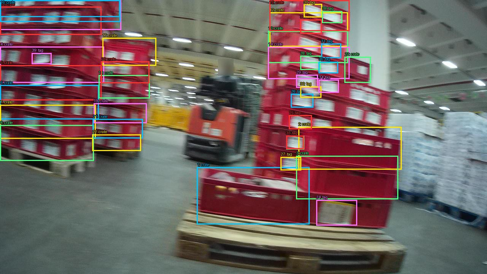
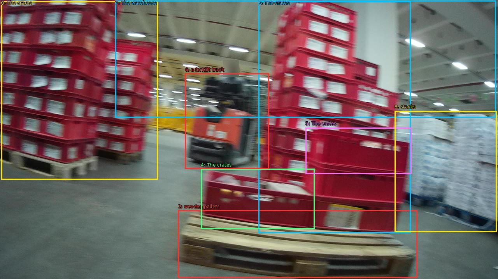

The image shows a large warehouse with stacks of red plastic crates on wooden pallets. The crates are stacked on top of each other and appear to be empty. In the background, there is a forklift truck parked in the middle of the warehouse. The warehouse has a high ceiling with overhead lights and there are stacks of white plastic bags on the right side of the image. The image is taken from a low angle, looking up at the stacks of crates.


Original · Caption raw · Grounding raw · Koordinate
Številke so lokalni ID regije. Dolge slikovne oznake so skrajšane; spodaj so celotne fraze. Napovedane regije se lahko prekrivajo ali opisujejo skupine.
| ID | Celotna fraza | bbox xyxy |
|---|---|---|
| 1 | wooden pallets | [457.5999755859375, 542.52001953125, 1072.0, 716.760009765625] |
| 2 | The crates | [664.9599609375, 3.2400002479553223, 1055.3599853515625, 601.5599975585938] |
| 3 | The crates | [3.1999998092651367, 3.2400002479553223, 405.1199951171875, 463.32000732421875] |
| 4 | The crates | [516.47998046875, 435.96002197265625, 808.3200073242188, 590.760009765625] |
| 5 | The crates | [785.2799682617188, 329.4000244140625, 1057.919921875, 448.20001220703125] |
| 6 | a forklift truck | [475.5199890136719, 189.72000122070312, 691.8399658203125, 435.96002197265625] |
| 7 | The warehouse | [296.32000732421875, 1.8000000715255737, 1274.239990234375, 303.4800109863281] |
| 8 | stacks | [1014.3999633789062, 286.20001220703125, 1276.7999267578125, 598.6800537109375] |